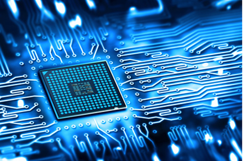

Краткая история
В 50-е - 60-е гг. была осознана роль информации как важнейшего ресурса предприятия, орга-низации, региона, общества в целом. Было положено начало разработки автоматизированных информационных систем разного рода.
Начиная с 60-х годов, в истории развития информационного поиска в нашей стране относи-тельно независимо сформировались два направления:
- Разработка автоматизированных информационных систем (АИС) как первой очереди автома-тизированных систем управления (АСУ);
- Разработка автоматизированных систем научно-технической информации (АСНТИ).
С появлением в середине 70-х годов персональных ЭВМ происходит корректировка идеи АСУ; от вычислительного центра и централизации управления к распределенному вычисли-тельному ресурсу и децентрализации управления.
В последнее время появился широкий спектр специализированных ИС - экономические ин-формационные системы (ЭИС), бухгалтерские информационные системы (БУИС), банков-ские информационные системы (БИС), информационные системы рынка ценных бумаг, мар-кетинговые ИС (МИС) и т.п.
Основные виды деятельности выпускников
- Проектирование цифровых устройств;
- Применение микропроцессорных систем, установка и настройка периферийного обору-дования;
- Техническое обслуживание и ремонт компьютерных систем и комплексов.